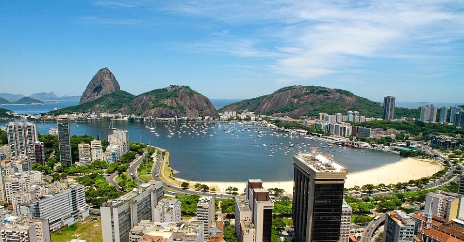
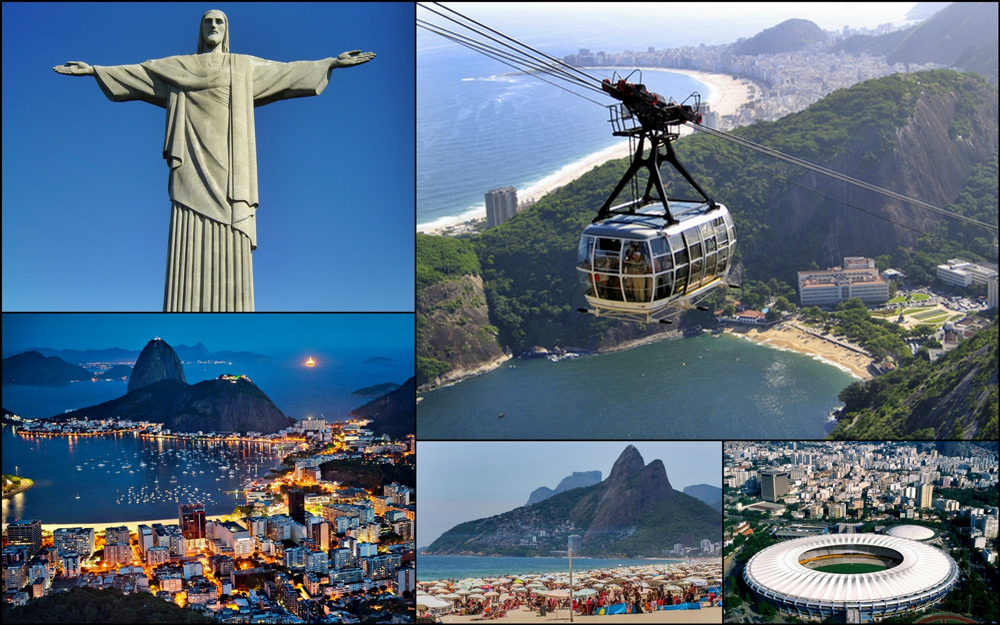

Rio de Janeiro (frequentemente referida simplesmente como Rio é um município brasileiro, capital do estado homônimo, situado no Sudeste do país. Maior destino turístico internacional no Brasil, da América Latina e de todo o Hemisfério Sul, a capital fluminense é a cidade brasileira mais conhecida no exterior, funcionando como um "espelho", ou "retrato" nacional, seja positiva ou negativamente. É a segunda maior metrópole do Brasil (depois de São Paulo), a sexta maior da América e a trigésima quinta do mundo. Sua população estimada pelo IBGE para 1.º de julho de 2018 era de 6 688 927 habitantes. Tem o epíteto de Cidade Maravilhosa e aquele que nela nasce é chamado de carioca. Parte da cidade foi designada Patrimônio Cultural da Humanidade, com o nome "Rio de Janeiro: Paisagem Carioca entre a Montanha e o Mar", classificada pela UNESCO em 1 de julho de 2012 e categorizada como uma Paisagem Cultural.
É um dos principais centros econômicos, culturais e financeiros do país, sendo internacionalmente conhecida por diversos ícones culturais e paisagísticos, como o Pão de Açúcar, o morro do Corcovado com a estátua do Cristo Redentor, as praias dos bairros de Copacabana, Ipanema e Barra da Tijuca (entre outros), o Estádio do Maracanã, o Estádio Nilton Santos, o bairro boêmio da Lapa e seus arcos, o Theatro Municipal do Rio de Janeiro, as florestas da Tijuca e da Pedra Branca, a Quinta da Boa Vista, a Biblioteca Nacional, a ilha de Paquetá, o réveillon de Copacabana, o carnaval carioca, a Bossa Nova e o samba.
Representa o segundo maior PIB do país (e o 30º maior do mundo), estimado em cerca de 140 bilhões de reais (IBGE/2007), e é sede das duas maiores empresas brasileiras - a Petrobras e a Vale, e das principais companhias de petróleo e telefonia do Brasil, além do maior conglomerado de empresas de mídia e comunicações da América Latina, o Grupo Globo. Contemplado por grande número de universidades e institutos, é o segundo maior polo de pesquisa e desenvolvimento do Brasil, responsável por 19% da produção científica nacional, segundo dados de 2005. Destaque para a Universidade Federal do Rio de Janeiro que publicou 5 952 artigos entre 1998 e 2002. Rio de Janeiro é considerada uma cidade global beta - pelo inventário de 2008 da Universidade de Loughborough (GaWC).
A cidade foi, sucessivamente, capital da colônia portuguesa do Estado do Brasil (1621-1815), depois do Reino Unido de Portugal, Brasil e Algarves (1815-1822), do Império do Brasil (1822-1889) e da República dos Estados Unidos do Brasil (1889-1968) até 1960, quando a sede do governo foi transferida para a então recém construída Brasília.